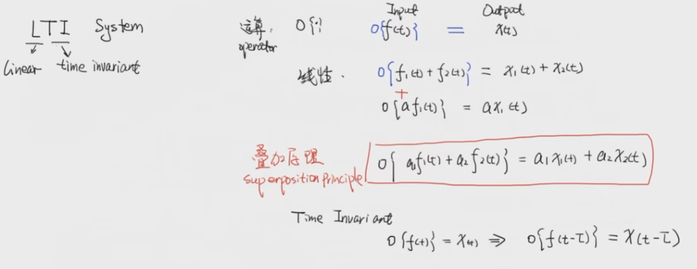
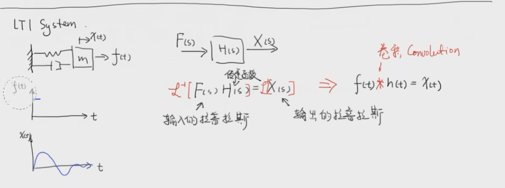

线性时不变系统的冲激响应与卷积
LTI System
 - 因为有阻尼，因此最后会停下来
-
想象1、2、3块都是独立的
-
叠加原理
-
是对这一时刻以前所有响应的加和
- 引入A是为了引入面积
- 左上角绿色的是一个单位的冲击，乘 A 代表整个第3时刻的冲击
- 底 × 高，高是
https://www.zhihu.com/question/22298352/answer/797335876
什么是卷积
你现在的状况，是你过去为你未来所做出的努力
不同时刻的激励，经历一定时间长度(我们设为n-t，不同时刻，时间长度不同)后，把这些累加起来，就是你你现在得到的结果
激励所处的时间点离你的现在越近，它的作用会越大，反之，因为随着时间的推移，它的作用也会随之衰减
本博客所有文章除特别声明外，均采用 CC BY-NC-SA 4.0 许可协议。转载请注明来自 Seline's blog！
相关推荐